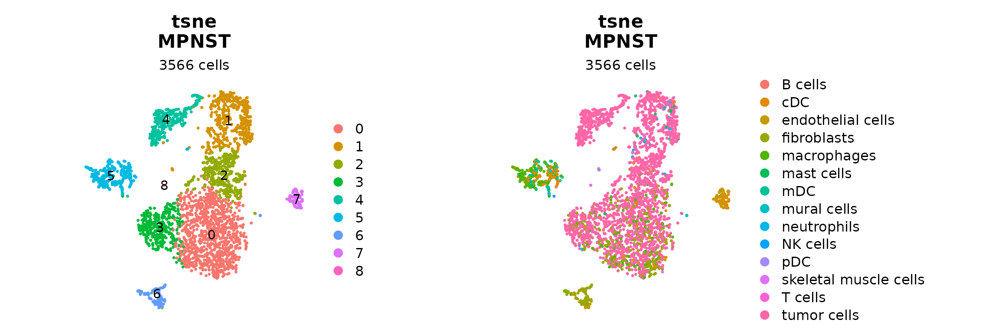
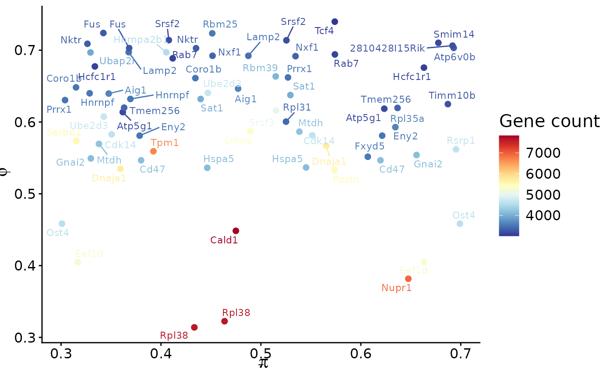
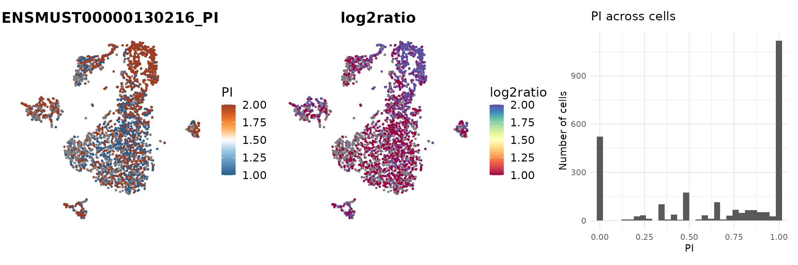
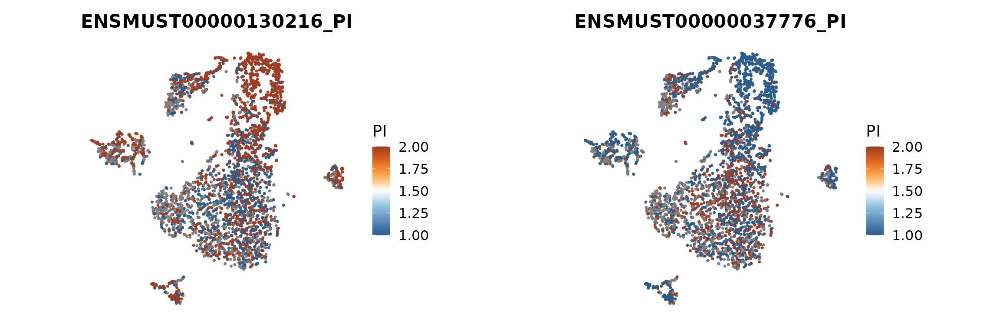
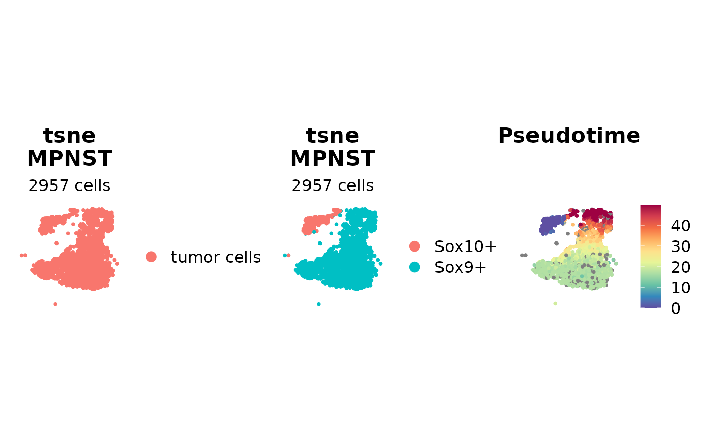
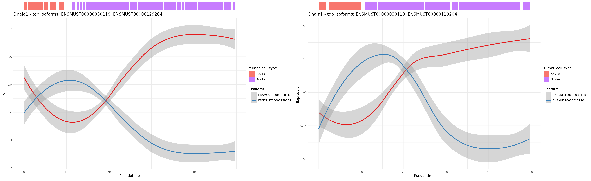
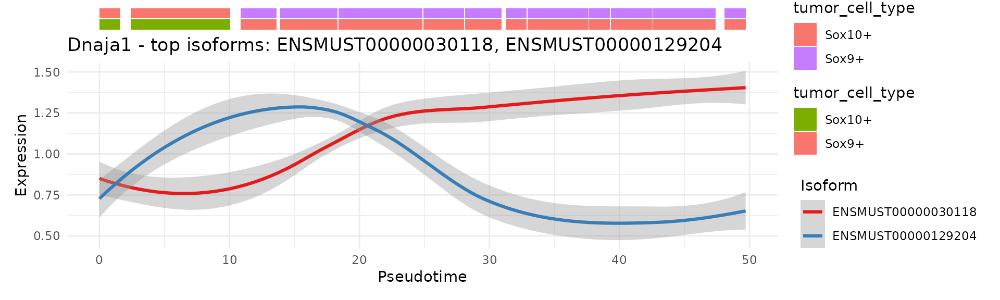

1. Overview
scIso provides tools to analyse isoform usage in single-cell long-read RNA-seq. Starting from an isoform count matrix and a standard Seurat object, scIso:
computes isoform-level metrics (Percent Inclusion, PI; heterogeneity, PHI),
visualises isoform usage on embeddings,
links isoform dynamics to pseudotime.
This vignette demonstrates a minimal end-to-end workflow using an example MPNST dataset downloaded from Zenodo.
Workflow summary
Load isoform counts and metadata (cell-type annotation, pseudotime).
Build a Seurat object and perform standard preprocessing.
Visualise clusters and cell-type annotation.
Compute and explore PI/PHI from an isoform count matrix.
Project isoform usage on embeddings and along pseudotime.
Briefly indicate how to adapt the workflow to your own data.
3. Load example data from Zenodo
We use a pre-computed cell-type annotation, a pseudotime vector and an isoform count matrix hosted on Zenodo.
cell_types <- readRDS(gzcon(
url("https://zenodo.org/records/17585277/files/Cell_type_annotation.rds")))
pseudotime <- readRDS(gzcon(
url("https://zenodo.org/records/17654917/files/Pseudotime_2020_23.rds")))
if (curl::has_internet()) {
tmp <- tempfile(fileext = ".zip")
curl::curl_download("https://zenodo.org/records/17585277/files/iso_matrix.zip?download=1", tmp)
unzip(tmp, exdir = tempdir())
scmat_iso <- Seurat::Read10X(data.dir = tempdir())
}4. Build a Seurat object and run standard preprocessing
We construct a Seurat object using the isoform counts as a dedicated assay and apply a standard preprocessing pipeline (normalisation, variable feature selection, PCA, UMAP/t-SNE, neighbour graph, clustering).
assay = "ISO"
iso_assay = Seurat::CreateAssayObject(counts = scmat_iso)
seurat_obj = Seurat::CreateSeuratObject(counts = iso_assay,
assay = assay,
project.name = sample_name)
seurat_obj[[paste0('log_nCount_', assay)]] = log(seurat_obj[[paste0('nCount_', assay)]])
seurat_obj
#> An object of class Seurat
#> 93670 features across 4532 samples within 1 assay
#> Active assay: ISO (93670 features, 0 variable features)
#> 2 layers present: counts, data
head(rownames(seurat_obj@assays$ISO$counts))
#> [1] "BambuGene6100..BambuTx23926" "BambuGene1971..BambuTx30365"
#> [3] "BambuGene3230..BambuTx42042" "BambuGene8892..BambuTx58725"
#> [5] "Mup10..BambuTx68486" "Mup12..BambuTx68510"
seurat_obj = Seurat::NormalizeData(seurat_obj,
normalization.method = "LogNormalize",
assay = "ISO",
verbose=F)
seurat_obj = Seurat::FindVariableFeatures(seurat_obj,
assay = "ISO",
nfeatures = 3000,
verbose=F)
seurat_obj
#> An object of class Seurat
#> 93670 features across 4532 samples within 1 assay
#> Active assay: ISO (93670 features, 3000 variable features)
#> 2 layers present: counts, data
common_cells <- intersect(colnames(seurat_obj), names(cell_types))
seurat_obj <- seurat_obj[,common_cells]
Seurat::DefaultAssay(seurat_obj) = "ISO"
ndims = 18
seurat_obj = Seurat::ScaleData(seurat_obj,
features = rownames(seurat_obj),
verbose = F)
var_features = Seurat::VariableFeatures(object = seurat_obj)
seurat_obj = Seurat::RunPCA(seurat_obj,
features = var_features,
verbose = F,
reduction.name = "RNA_pca",
max_dims = 100)
seurat_obj = Seurat::RunUMAP(seurat_obj,
reduction = "RNA_pca",
dims = 1:ndims,
seed.use = 1337L,
verbose = F,
reduction.name = paste0("RNA_pca_", ndims, "_umap"))
#> Warning: The default method for RunUMAP has changed from calling Python UMAP via reticulate to the R-native UWOT using the cosine metric
#> To use Python UMAP via reticulate, set umap.method to 'umap-learn' and metric to 'correlation'
#> This message will be shown once per session
seurat_obj = Seurat::RunTSNE(seurat_obj,
reduction = "RNA_pca",
dims = 1:ndims,
seed.use = 1337L,
verbose = F,
reduction.name = paste0("RNA_pca_", ndims, "_tsne"))
seurat_obj
#> An object of class Seurat
#> 93670 features across 3566 samples within 1 assay
#> Active assay: ISO (93670 features, 3000 variable features)
#> 3 layers present: counts, data, scale.data
#> 3 dimensional reductions calculated: RNA_pca, RNA_pca_18_umap, RNA_pca_18_tsne
seurat_obj = Seurat::FindNeighbors(seurat_obj, reduction = "RNA_pca", dims = c(1:ndims))
#> Computing nearest neighbor graph
#> Computing SNN
seurat_obj = Seurat::FindClusters(seurat_obj, resolution = 0.5)
#> Modularity Optimizer version 1.3.0 by Ludo Waltman and Nees Jan van Eck
#>
#> Number of nodes: 3566
#> Number of edges: 128336
#>
#> Running Louvain algorithm...
#> Maximum modularity in 10 random starts: 0.8735
#> Number of communities: 9
#> Elapsed time: 0 seconds5. Add cell-type annotation and visualise clusters
We now bring in the external cell-type labels and overlay them on the embedding.
cell_types_named <- levels(cell_types)[cell_types]
names(cell_types_named) <- names(cell_types)
seurat_obj$cell_types <- NA_character_
seurat_obj$cell_types[common_cells] <- cell_types_named[common_cells]
proj <- "tsne"
Seurat::DimPlot(seurat_obj, reduction = paste0("RNA_pca_18_", proj), label = T) +
ggplot2::labs(title = paste0(proj,"\n", "MPNST"),
subtitle = paste0(ncol(seurat_obj), " cells")) +
Seurat::NoAxes() +
ggplot2::theme(aspect.ratio = 1,
plot.title = ggplot2::element_text(hjust = 0.5),
plot.subtitle = ggplot2::element_text(hjust = 0.5)) |
Seurat::DimPlot(seurat_obj, reduction = paste0("RNA_pca_18_", proj), group.by = "cell_types") +
ggplot2::labs(title = paste0(proj,"\n", "MPNST"),
subtitle = paste0(ncol(seurat_obj), " cells")) +
Seurat::NoAxes() +
ggplot2::theme(aspect.ratio = 1,
plot.title = ggplot2::element_text(hjust = 0.5),
plot.subtitle = ggplot2::element_text(hjust = 0.5))
#p_clusters | p_annot6. Compute and explore isoform PI/PHI
scIso uses PI (Percent Inclusion) and PHI (heterogeneity) to summarise isoform usage per gene. For speed, we load a pre-computed PI matrix, but the same result can be obtained with computePIMatrix() on the fly.
#pi_mtx <- scIso::computePIMatrix(seurat_obj,
# assay = "ISO",
# slot = "count")
if (curl::has_internet()) {
tmp <- tempfile(fileext = ".rds")
curl::curl_download("https://zenodo.org/records/17585277/files/pi_mtx.rds?download=1", tmp)
pi_mtx <- readRDS(tmp)
}
scIso::plotPIPHI(pi_mat = pi_mtx,
iso_mat = seurat_obj@assays$ISO$counts,
min_gene_count = 3000
)
7. Visualise isoform usage on embeddings
We next contrast two isoforms of Srsf3 on the t-SNE embedding, using FeaturePlotPI(). This function computes PI for the selected isoforms and displays PI and log-ratio at the single-cell level.
p <- scIso::FeaturePlotPI(seurat_obj,
name = "Srsf3",
reduction = paste0("RNA_pca_18_", proj),
iso1 = "Srsf3..ENSMUST00000130216",
iso2 = "Srsf3..ENSMUST00000037776")
#> Warning: The `slot` argument of `GetAssayData()` is deprecated as of SeuratObject 5.0.0.
#> ℹ Please use the `layer` argument instead.
#> ℹ The deprecated feature was likely used in the scIso package.
#> Please report the issue at <https://github.com/alihamraoui/scIso/issues>.
#> This warning is displayed once every 8 hours.
#> Call `lifecycle::last_lifecycle_warnings()` to see where this warning was
#> generated.
p[[3]] | p[[4]]
p[[1]] | p[[2]]
8. Restrict to tumour cells and add pseudotime
We focus on tumour cells, refine the annotation, and add the pseudotime trajectory previously inferred for this dataset.
major <- seurat_obj@meta.data %>%
group_by(seurat_clusters) %>%
summarise(cell_annotation=names(which.max(table(cell_types))))
idx <- match(seurat_obj@meta.data$seurat_clusters, major$seurat_clusters)
seurat_obj$cell_pop <- major$cell_annotation[idx]
seurat_obj <- subset(seurat_obj, subset = cell_pop == "tumor cells")
seurat_obj$tumor_cell_type <- ifelse(seurat_obj$seurat_clusters == 4, "Sox10+", "Sox9+")
seurat_obj$tumor_cell_type <- ifelse(seurat_obj$seurat_clusters == 4, "Sox10+", "Sox9+")
Seurat::DimPlot(seurat_obj, reduction = paste0("RNA_pca_18_", proj), group.by = "cell_pop") +
ggplot2::labs(title = paste0(proj,"\n", "MPNST"),
subtitle = paste0(ncol(seurat_obj), " cells")) +
Seurat::NoAxes() +
ggplot2::theme(aspect.ratio = 1,
plot.title = ggplot2::element_text(hjust = 0.5),
plot.subtitle = ggplot2::element_text(hjust = 0.5)) |
Seurat::DimPlot(seurat_obj, reduction = paste0("RNA_pca_18_", proj), group.by = "tumor_cell_type") +
ggplot2::labs(title = paste0(proj,"\n", "MPNST"),
subtitle = paste0(ncol(seurat_obj), " cells")) +
Seurat::NoAxes() +
ggplot2::theme(aspect.ratio = 1,
plot.title = ggplot2::element_text(hjust = 0.5),
plot.subtitle = ggplot2::element_text(hjust = 0.5)) |
Seurat::FeaturePlot(seurat_obj, features = "pseudotime",
reduction = paste0("RNA_pca_18_", proj)) +
ggplot2::scale_color_gradientn(colors = rev(RColorBrewer::brewer.pal(name = "Spectral", n = 10))) +
ggplot2::ggtitle("Pseudotime") +
ggplot2::theme(aspect.ratio = 1,
plot.title = ggplot2::element_text(hjust = 0.5)) +
Seurat::NoAxes()
#> Scale for colour is already present.
#> Adding another scale for colour, which will replace the existing scale.
9. Isoform dynamics along pseudotime
IsoformPseudotimePlot() summarises isoform usage for a given gene across pseudotime bins and optionally stratified by cell groups.
scIso::IsoformPseudotimePlot(seurat_obj,
gene = "Dnaja1",
band_cols = "tumor_cell_type",
pseudotime_col = "pseudotime",
nbins = 80,
mode = "PI",
slot = "data")
#> Warning: Using `size` aesthetic for lines was deprecated in ggplot2 3.4.0.
#> ℹ Please use `linewidth` instead.
#> ℹ The deprecated feature was likely used in the scIso package.
#> Please report the issue at <https://github.com/alihamraoui/scIso/issues>.
#> This warning is displayed once every 8 hours.
#> Call `lifecycle::last_lifecycle_warnings()` to see where this warning was
#> generated.
#> `geom_smooth()` using formula = 'y ~ x'
#> Warning: Removed 764 rows containing non-finite outside the scale range
#> (`stat_smooth()`).
scIso::IsoformPseudotimePlot(seurat_obj,
gene = "Dnaja1",
band_cols = c("tumor_cell_type", "tumor_cell_type"),
pseudotime_col = "pseudotime",
nbins = 30,
mode = "exp",
slot = "data")
#> `geom_smooth()` using formula = 'y ~ x'
10. Using scIso on your own data
To apply this workflow to your own dataset:
replace the example isoform matrix with your own (features = isoforms or isoform-level identifiers, columns = cells/barcodes);
construct a Seurat object with an isoform assay (e.g. “ISO”) and follow your preferred preprocessing strategy;
compute PI using computePIMatrix() on your isoform count matrix;
add any relevant metadata (cell types, clusters, trajectories) to seurat_obj@meta.data;
use plotPIPHI(), FeaturePlotPI() and IsoformPseudotimePlot() to interrogate isoform heterogeneity and dynamics.
sessionInfo()
#> R version 4.5.2 (2025-10-31)
#> Platform: x86_64-pc-linux-gnu
#> Running under: Ubuntu 24.04.3 LTS
#>
#> Matrix products: default
#> BLAS: /usr/lib/x86_64-linux-gnu/openblas-pthread/libblas.so.3
#> LAPACK: /usr/lib/x86_64-linux-gnu/openblas-pthread/libopenblasp-r0.3.26.so; LAPACK version 3.12.0
#>
#> locale:
#> [1] LC_CTYPE=C.UTF-8 LC_NUMERIC=C LC_TIME=C.UTF-8
#> [4] LC_COLLATE=C.UTF-8 LC_MONETARY=C.UTF-8 LC_MESSAGES=C.UTF-8
#> [7] LC_PAPER=C.UTF-8 LC_NAME=C LC_ADDRESS=C
#> [10] LC_TELEPHONE=C LC_MEASUREMENT=C.UTF-8 LC_IDENTIFICATION=C
#>
#> time zone: UTC
#> tzcode source: system (glibc)
#>
#> attached base packages:
#> [1] stats graphics grDevices utils datasets methods base
#>
#> other attached packages:
#> [1] future_1.68.0 dplyr_1.1.4 scIso_0.1.0
#>
#> loaded via a namespace (and not attached):
#> [1] RColorBrewer_1.1-3 jsonlite_2.0.0 magrittr_2.0.4
#> [4] spatstat.utils_3.2-0 farver_2.1.2 rmarkdown_2.30
#> [7] fs_1.6.6 ragg_1.5.0 vctrs_0.6.5
#> [10] ROCR_1.0-11 spatstat.explore_3.5-3 paletteer_1.6.0
#> [13] htmltools_0.5.8.1 curl_7.0.0 sass_0.4.10
#> [16] sctransform_0.4.2 parallelly_1.45.1 KernSmooth_2.23-26
#> [19] bslib_0.9.0 htmlwidgets_1.6.4 desc_1.4.3
#> [22] ica_1.0-3 plyr_1.8.9 plotly_4.11.0
#> [25] zoo_1.8-14 cachem_1.1.0 igraph_2.2.1
#> [28] mime_0.13 lifecycle_1.0.4 pkgconfig_2.0.3
#> [31] Matrix_1.7-4 R6_2.6.1 fastmap_1.2.0
#> [34] fitdistrplus_1.2-4 shiny_1.11.1 digest_0.6.39
#> [37] rematch2_2.1.2 patchwork_1.3.2 Seurat_5.3.1
#> [40] tensor_1.5.1 prismatic_1.1.2 RSpectra_0.16-2
#> [43] irlba_2.3.5.1 textshaping_1.0.4 labeling_0.4.3
#> [46] progressr_0.18.0 latex2exp_0.9.6 spatstat.sparse_3.1-0
#> [49] mgcv_1.9-3 httr_1.4.7 polyclip_1.10-7
#> [52] abind_1.4-8 compiler_4.5.2 withr_3.0.2
#> [55] S7_0.2.1 fastDummies_1.7.5 MASS_7.3-65
#> [58] tools_4.5.2 lmtest_0.9-40 otel_0.2.0
#> [61] httpuv_1.6.16 future.apply_1.20.0 goftest_1.2-3
#> [64] glue_1.8.0 nlme_3.1-168 promises_1.5.0
#> [67] grid_4.5.2 Rtsne_0.17 cluster_2.1.8.1
#> [70] reshape2_1.4.5 generics_0.1.4 gtable_0.3.6
#> [73] spatstat.data_3.1-9 tidyr_1.3.1 data.table_1.17.8
#> [76] sp_2.2-0 spatstat.geom_3.6-1 RcppAnnoy_0.0.22
#> [79] ggrepel_0.9.6 RANN_2.6.2 pillar_1.11.1
#> [82] stringr_1.6.0 spam_2.11-1 RcppHNSW_0.6.0
#> [85] later_1.4.4 splines_4.5.2 lattice_0.22-7
#> [88] survival_3.8-3 deldir_2.0-4 tidyselect_1.2.1
#> [91] miniUI_0.1.2 pbapply_1.7-4 knitr_1.50
#> [94] gridExtra_2.3 scattermore_1.2 xfun_0.54
#> [97] matrixStats_1.5.0 stringi_1.8.7 lazyeval_0.2.2
#> [100] yaml_2.3.10 evaluate_1.0.5 codetools_0.2-20
#> [103] tibble_3.3.0 cli_3.6.5 uwot_0.2.4
#> [106] xtable_1.8-4 reticulate_1.44.1 systemfonts_1.3.1
#> [109] jquerylib_0.1.4 Rcpp_1.1.0 globals_0.18.0
#> [112] spatstat.random_3.4-2 png_0.1-8 spatstat.univar_3.1-5
#> [115] parallel_4.5.2 pkgdown_2.2.0 ggplot2_4.0.1
#> [118] dotCall64_1.2 listenv_0.10.0 viridisLite_0.4.2
#> [121] ggthemes_5.1.0 scales_1.4.0 ggridges_0.5.7
#> [124] crayon_1.5.3 SeuratObject_5.2.0 purrr_1.2.0
#> [127] rlang_1.1.6 cowplot_1.2.0